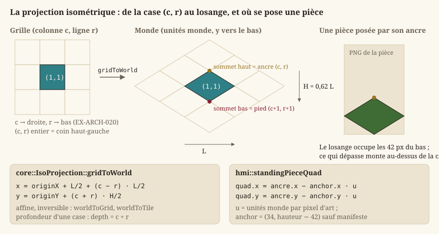
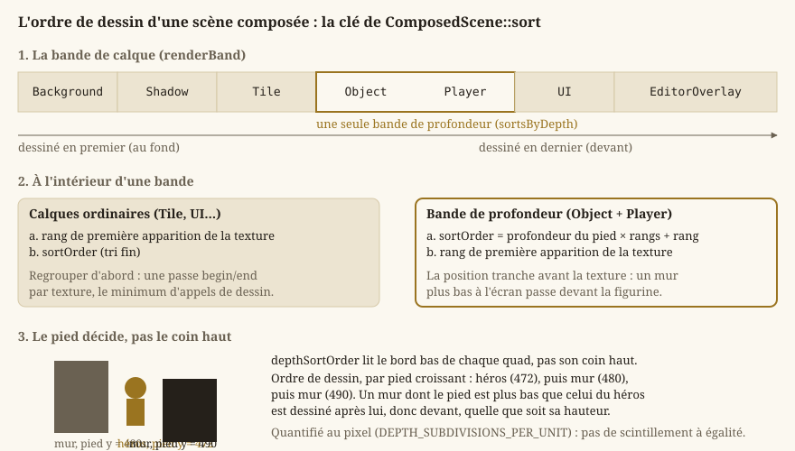
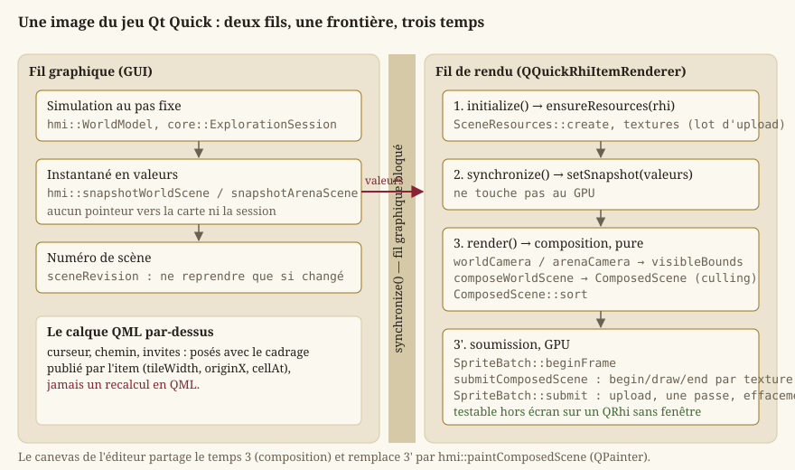

Rendu 2D : de la scène à l'écran
Cette page explique comment un lieu qu'on parcourt, l'arène du Colisée ou le brouillon de l'éditeur finissent par apparaître comme une image à l'écran, en partant des notions de base du rendu temps réel pour qui n'en a jamais écrit. Tout le rendu vit dans Source/HMI/Graphics, sur une surface fournie par Qt (l'éditeur dans Source/Editor/Ui, le jeu dans Source/HMI/Runtime) ; c'est la seule partie du moteur qui dépend du GPU, via QRhi (voir plus bas — Core en reste totalement indépendant, Boucle de jeu et pas de temps fixe et EX-ARCH-040).
La page traite chaque en-tête de Source/HMI/Graphics, du plus bas niveau (le pipeline) au plus haut (les scènes, la galerie, le rendu de maquette), puis les éléments Qt Quick de Source/HMI/Runtime qui hébergent ce rendu.
Attention — Depuis le
LOT-103, le rendu suit le standard 2D HD duLOT-101: l'échelle de l'art se lit dans le manifeste du lieu ("tile": [256, 159]), une figurine se découpe par sa cellule entière, l'art peint se filtre en bilinéaire avec mipmaps et en alpha prémultiplié, et la caméra cadre une case à la hauteur de la fenêtre divisée par 10,8. Depuis leLOT-124, une pièce de scène se cherche dans le lieu de la carte et dans ses niveaux communs (Regions/…,Common/…) :hmi::PlaceAppearance::loadForPlacedonne à chaque pièce son chemin sous le niveau qui la déclare, et à chaque figurine le dossierCharacters/qui la range (hmi::PlaceAppearance::figureDirectory). Une figurine introuvable se dessine par son marqueur.
Vocabulaire de base : GPU, swap chain, back buffer
Un jeu ne dessine pas directement sur l'écran : il dessine dans une zone mémoire dédiée sur la carte graphique (le GPU, Graphics Processing Unit, un processeur spécialisé dans le calcul massivement parallèle nécessaire pour colorier des millions de pixels par seconde), puis cette image est transmise à l'écran. Dessiner directement dans l'image actuellement affichée provoquerait un artefact visible (tearing : une moitié d'image montre l'ancien contenu, l'autre le nouveau, si l'écran est en train de la rafraîchir pendant qu'on la modifie). La solution standard, le double buffering, utilise deux images en mémoire :
- le front buffer : l'image actuellement montrée à l'écran, intouchable ;
- le back buffer : une image « en coulisse », sur laquelle le jeu dessine librement la frame suivante.
Une fois le back buffer entièrement dessiné, une opération de présentation échange les deux rôles (le back buffer devient le front buffer et inversement) — idéalement au moment précis où l'écran finit de rafraîchir l'image précédente, ce qui s'appelle la synchronisation verticale (V-Sync) : elle évite le tearing en alignant l'échange sur le rythme de rafraîchissement de l'écran, au prix d'attendre ce moment si le jeu est plus rapide que l'écran. L'ensemble « back buffer(s) + mécanisme d'échange » s'appelle une swap chain.
QRhi : une couche d'accès au GPU, pas un changement de cible
Le projet ne parle pas à Direct3D 11 directement : il passe par QRhi, la couche d'abstraction de rendu de Qt. La cible technique reste Direct3D 11 — QRhi retient ce backend par défaut sous Windows (EX-REN-002) — mais le device, la swap chain et la présentation appartiennent à Qt (EX-REN-022, EX-ARCH-050).
Ce que le projet conserve en propre :
hmi::SpriteBatch: le pipeline 2D (tampons de sommets et d'indices, tampon uniforme, échantillonneur, états de mélange) et l'émission des lots de dessin ;hmi::TextureLoader: la création des textures GPU à partir de pixels décodés ;- les shaders (
Source/HMI/Graphics/Shaders/sprite.vert,sprite.frag), écrits une fois en GLSL et compilés en.qsbpar l'outilqsb— un.qsbcontient plusieurs traductions (SPIR-V, HLSL, MSL), ce qui permet à QRhi de choisir son backend à l'exécution sans que le projet livre un shader par API.
Deux contraintes de QRhi façonnent le code, et méritent d'être connues avant de le lire :
- Un téléversement ne se déclare pas pendant une passe de rendu. Les données (sommets, pixels de texture) transitent par un
QRhiResourceUpdateBatch, soumis avant l'ouverture de la passe.hmi::SpriteBatchenregistre donc toute l'image côté CPU, puis téléverse une fois et dessine (SpriteBatch::submit) — au lieu de réécrire son tampon entre deux appels de dessin. - L'espace de clip du shader est celui d'OpenGL, quelle que soit la cible : la matrice de projection est multipliée par
QRhi::clipSpaceCorrMatrix(), qui la ramène à la convention du backend retenu.
hmi::RhiContext : le QRhi courant et le lot de l'image
hmi::RhiContext (RhiContext.h) est une petite structure à deux pointeurs, possédée par la surface de rendu et référencée — jamais copiée — par tout ce qui crée des textures :
rhi: l'interface de rendu courante,nullptravant la première initialisation. Elle peut changer (l'hôte recrée ses ressources quand la fenêtre de haut niveau change) : les propriétaires de textures comparent leQRhiqu'ils ont servi à celui du contexte plutôt que de supposer qu'il ne bouge jamais ;updates: le lot de mises à jour de l'image en cours,nullptrhors d'une image. Les textures se chargent paresseusement, en pleine composition ; leurs pixels sont déposés dans ce lot, soumis d'un bloc avant l'ouverture de la passe.
hmi::RhiContext::ready répond « une texture peut-elle être créée et téléversée maintenant ? » : les deux pointeurs doivent être posés.
hmi::GraphicsLog : journaliser le cycle de vie, jamais le dessin
GraphicsLog.h définit GRAPHICS_LOG_TRACE/INFO/WARNING/ERROR, la catégorie « Graphics » des macros de Journalisation et assertions. Elles se réservent aux événements de cycle de vie (création de ressources, redimensionnement, asset manquant) — jamais aux chemins exécutés à chaque image, où une ligne de journal coûterait plus que le dessin.
Les surfaces de dessin : un élément composé avec l'interface
Le rendu n'est jamais présenté dans une fenêtre native embarquée (EX-REN-050) : un élément frère d'une fenêtre native ne se dessine pas de façon fiable par-dessus elle. Les surfaces existantes sont toutes composées avec le reste de l'interface :
hmi::EditorViewport(Source/Editor/Ui) : le canevas de l'éditeur, uneQGraphicsView(LOT-EDITOR-02). Il ne parle pas au GPU : il peint parQPainterla même scène composée que le jeu soumet (hmi::paintComposedScene), en édition comme en essai immédiat (Éditeur de niveaux), et reçoit les événements clavier/souris Qt (Entrées et actions logiques). Un test (Source/Test/Unit/Editor/test_scene_painter.cpp) compare son image au rendu QRhi du jeu, cadrage pour cadrage ;hmi::WorldViewportItem,hmi::ArenaViewportItemethmi::AssetGalleryItem(Source/HMI/Runtime) : le lieu qu'on parcourt, l'arène et la galerie de débug, dans le jeu Qt Quick. Ce sont desQQuickRhiItem, exposés au QML (IHM Qt — deux applications, deux technologies) ; ils sont détaillés en fin de page ;hmi::renderCityBlockpeint hors écran, sur unQRhisans fenêtre, l'îlot d'un quartier pour l'écran « Carte ».
Toutes possèdent les mêmes ressources graphiques — lot de sprites, atlas, registre de textures — regroupées dans hmi::SceneResources.
hmi::SceneResources : créées ensemble, libérées dans l'ordre
Le regroupement existe pour l'ordre de libération : ce qui tient une texture doit mourir avant la texture, et la texture avant le pipeline qui l'échantillonne. Libérer dans le désordre ne produit pas une erreur nette mais un plantage à la fermeture, intermittent selon le pilote. hmi::SceneResources::release fixe cet ordre une fois pour toutes ; aucun appelant n'a plus à s'en souvenir. L'autre raison est la non-divergence : deux hôtes (LOT-86) créent exactement les mêmes ressources ; les écrire deux fois aurait suffi à les faire diverger, et cela ne se voit qu'à l'exécution, sur un seul des deux.
hmi::SceneResources::create(rhi, updates)construit leSpriteBatch, leTextureAtlaset leTextureCachesurrhi, en déposant les téléversements de la première image dansupdates, que l'appelant soumet ensuite hors de toute passe ;created()dit sicreatea réussi et que rien n'a été libéré depuis ;setFrameUpdates(updates)déclare le lot de l'image en cours (nullptren fin d'image) : c'est ce queRhiContext::updatesreflète ;context(),sprites(),atlas(),textures()donnent accès aux quatre membres.
Ce qui n'y est pas — le brouillon d'édition, le DraftRenderer, la caméra, la carte jouée — appartient à un seul des hôtes : le remonter ici ferait payer au jeu ce dont il ne se sert pas.
Unités monde et pixels : hmi::Camera2D
Core ne connaît que des unités monde (Mathématiques du moteur) — jamais de pixels. Le rendu doit donc convertir une position monde en position d'écran avant de dessiner quoi que ce soit ; c'est le rôle de hmi::Camera2D (Camera2D.h). Deux paramètres gouvernent cette conversion :
hmi::Camera2D::PIXELS_PER_UNIT= 16 : l'échelle de base, fixée par convention du projet (EX-ARCH-021) — une unité monde occupe 16 pixels à l'écran avant tout zoom.Coreen garde une copie (core::ARENA_PIXELS_PER_UNIT) parce qu'il ne voit pasHMI;- le zoom (
setZoom,zoom()) : un multiplicateur additionnel de cette échelle, strictement positif.
La caméra a aussi un centre (setCenter, center(), en unités monde) : le point qui apparaît au milieu de la surface, dont les dimensions en pixels sont données au constructeur (Camera2D(viewportWidth, viewportHeight)) et mises à jour par setViewportSize à chaque redimensionnement. L'origine écran est en haut à gauche et l'axe Y descend : la convention du projet, la même que celle des cartes.
hmi::Camera2D::projectionMatrixcombine centre, échelle et dimensions de la surface en une matrice de projection orthographique (ligne-major DirectXMath) : la transformation standard qui convertit une position monde en position « clip », l'espace normalisé que le GPU attend en sortie du vertex shader. C'est cette matrice, et non une conversion manuelle pixel par pixel, que le pipeline applique à chaque sommet ;hmi::Camera2D::worldToScreenethmi::Camera2D::screenToWorldexposent la même conversion côté CPU, pour des besoins hors dessin (convertir une position de souris en position monde) ;hmi::Camera2D::visibleBoundsest le rectangle du monde effectivement cadré, dérivé descreenToWorld: la base du culling (plus bas). Aucune notion de cadrage nouvelle n'est introduite, la caméra reste la seule source de vérité.
Cadrer une scène : fitZoom, worldCamera, arenaCamera
hmi::Camera2D::fitZoom(availableWidth, availableHeight, contentWidth, contentHeight, margin) calcule le zoom qui fait tenir un rectangle donné (en unités monde) dans une surface disponible (en pixels), sans jamais laisser de zone hors champ : le plus petit des deux rapports, multiplié par margin (1 par défaut) pour laisser une marge visuelle, sans arrondi. Il s'arrondissait à l'entier pour la netteté du pixel art ; l'art peint et filtré par mipmaps n'a plus de grille à protéger (EX-ARCH-022, LOT-103). Fonction pure, partagée par le canevas de l'éditeur (EX-EDIT-013) et l'arène : aucune règle dupliquée entre les deux.
Les deux scènes du jeu ont chacune une fonction de cadrage, qui est la seule géométrie de la scène à l'écran :
hmi::arenaCamera(projection, pixelWidth, pixelHeight)(ArenaSceneRenderer.h) cadre le Colisée entier, centré, parfitZoom;hmi::worldCamera(projection, focus, pixelWidth, pixelHeight, tilePixels)(WorldSceneRenderer.h) suit le héros dans le lieu qu'on parcourt (EX-REN-013) : une case occupe à l'écran la hauteur de la surface divisée parhmi::WORLD_VIEW_HEIGHT_IN_TILES= 10,8 (hmi::worldTilePixels: 100 px à 1080p, 200 px à 2160p, donc la même étendue de monde aux deux définitions), centrée sur le point suivi, puis ramenée dans la scène — sur un axe où la scène est plus petite que la vue, la caméra reste centrée, faute de quoi la carte collerait à un bord.tilePixels, nul par défaut, impose une autre taille de case : c'est ce que fait l'image d'un îlot (hmi::CITY_BLOCK_TILE_PIXELS).
L'élément Qt Quick publie ce cadrage à son calque d'interface QML et s'en sert pour traduire le pointeur en case : deux cadrages recalculés chacun de leur côté ne tombent jamais au même pixel.
Le pipeline de dessin de sprites : hmi::SpriteBatch
Pourquoi « batcher » plutôt que dessiner un sprite à la fois
Chaque appel de dessin adressé au GPU (un draw call) a un coût fixe non négligeable, indépendant du nombre de pixels dessinés — piloté par la communication CPU → GPU, pas par le travail du GPU lui-même. Une carte de plusieurs milliers de cases dessinées par des appels individuels saturerait ce coût fixe avant même de saturer le GPU. Le batching (« dessin par lots ») regroupe un grand nombre de sprites partageant la même texture en un minimum d'appels de dessin.
L'usage de hmi::SpriteBatch (SpriteBatch.h), construit sur un QRhi* non possédé qui doit lui survivre (rhi() le rend, pour comparer en cas de perte de contexte) :
hmi::SpriteBatch::beginFrameouvre l'enregistrement d'une image : sommets et lots de la précédente sont vidés (capacité conservée) ;- pour chaque lot,
hmi::SpriteBatch::begin(projection, texture)fixe la texture échantillonnée (unehmi::TextureHandle, identité opaque,nullptrrendant le lot muet) et la projection — portée par lot et non par image, ce qui permet à une interface en coordonnées écran de se dessiner dans la même image que le monde ; puis un ou plusieursdraw(...); puishmi::SpriteBatch::end, qui fige la plage de quads (un lot vide n'émet rien) ; hmi::SpriteBatch::submit(commandBuffer, target, updates, clear), une fois par image, hors de toute passe : téléverse les sommets et les projections de tous les lots (avecupdates, le lot de téléversements de textures accumulé pendant la composition, éventuellement nul), ouvre sa propre passe, efface le fond àclear(quatre composantes RGBA dans[0, 1]) même si aucun lot n'a été enregistré — sans quoi une image vide montrerait le résidu de la précédente — et émet un appel de dessin par lot.
Le découpage en lots, et donc le nombre d'appels, n'est pas décidé ici : c'est hmi::ComposedScene qui le fixe par son tri. Les liaisons de ressources par texture sont gardées d'une image à l'autre (les recréer à chaque lot allouerait des ressources GPU des centaines de fois par seconde), le tampon d'indices, immuable, couvre MAXIMUM_QUADS = 16 384 quads par appel, et le pipeline se reconstruit si le descripteur de passe change (redimensionnement, autre fenêtre).
Trois primitives : hmi::SpriteQuad, hmi::LineQuad, hmi::PolyQuad
Un quad est simplement un rectangle (deux triangles, en pratique — un GPU ne sait dessiner que des triangles). Les trois primitives vivent dans Quad.h, sans dépendance GPU, pour que la composition puisse les manipuler sans carte graphique (EX-NFR-004) ; elles partagent les conventions du projet (Y vers le bas, UV normalisées dans [0, 1], teinte RVBA multipliée avec la texture — une teinte blanche opaque laisse la texture inchangée).
hmi::SpriteQuad: un rectangle aligné aux axes, par son coin haut-gauche et sa taille en unités monde (x, y, width, height), la portion de texture à échantillonner (u0, v0, u1, v1— la convention universelle pour désigner un point d'une texture indépendamment de sa résolution) et sa teinte ;rotation(radians, nul par défaut) le tourne autour de son propre centre. C'est la primitive des tuiles, des pièces et des figurines ;hmi::LineQuad: un segment épais orienté librement, par ses deux extrémités (ax, ay, bx, by) et une épaisseur perpendiculaire (thickness).SpriteBatch::draw(const LineQuad&)calcule la normale du segment et pousse quatre sommets décalés d'une demi-épaisseur de part et d'autre ; le même tampon d'indices s'applique. Un segment dégénéré (extrémités confondues) ne pousse rien. Il sert aux tracés de maquette et aux liens dessinés par l'éditeur ;hmi::PolyQuad: un quadrilatère à quatre sommets libres (x[4], y[4]), d'une seule teinte — la primitive du rendu de maquette (LOT-128, décision D1). Un losange isométrique au rapport 0,62 n'est ni un rectangle ni un carré tourné, et les faces d'un bloc extrudé sont des parallélogrammes : quatre sommets libres couvrent les deux sans rien de neuf pour le GPU. Les sommets se donnent dans l'ordre du pourtour, sans croisement ; la composition les fournit tels quels et la texture liée est l'aplat blanc 1 × 1, de sorte que la teinte seule décide de la couleur.
Sommets, shaders, et échantillonnage
En interne, chaque quad devient 4 sommets (position, UV, couleur), envoyés au GPU avec deux petits programmes qui s'exécutent sur le GPU lui-même :
- le vertex shader transforme chaque position de sommet (unités monde) vers l'espace clip, via la matrice de projection du lot ;
- le pixel shader (aussi appelé fragment shader) calcule la couleur finale de chaque pixel couvert par les triangles, en échantillonnant la texture à la coordonnée UV interpolée et en la multipliant par la couleur du sommet.
L'échantillonnage suit la nature de l'image (EX-ARCH-022, EX-REN-041), que la texture porte depuis sa création (hmi::TextureFiltering) :
- l'art peint, tout ce qui vient d'un fichier (
hmi::loadTextureFromFile), estSmooth: la texture reçoit sa chaîne de mipmaps — des copies d'elle-même deux, quatre, huit fois plus petites, que le GPU engendre au téléversement — et s'échantillonne en bilinéaire entre ses niveaux. L'art de scène est toujours réduit à l'écran (256 pixels d'art pour 100 à 1080p) : au plus proche, chaque pixel d'écran ne retiendrait qu'un texel sur trois, un autre à la moindre fraction de déplacement, et l'image scintillerait ; - une image engendrée — damier de repli, aplat blanc, marqueur, atlas procédural — est
Sharp: sans mipmap, au plus proche, ses pixels étant voulus un à un.
SpriteBatch reconnaît la nature d'une texture à son drapeau MipMapped et lui lie l'échantillonneur qui convient.
Le pipeline gère la transparence en alpha prémultiplié (mélange One/OneMinusSrcAlpha) : toute texture est prémultipliée au téléversement, et le shader prémultiplie la teinte. Sans prémultiplication, un bord adouci filtré mêlerait la couleur de ses voisins transparents — souvent noirs — et chaque pièce porterait une frange sombre ; ses mipmaps aussi, moyennées sur de l'alpha droit, se fonceraient à chaque niveau.
hmi::screenProjectionMatrix : dessiner en pixels
hmi::screenProjectionMatrix(viewportWidth, viewportHeight) (SpriteRenderer.h) construit la projection écran → clip, indépendante de Camera2D, pour ce qui se dessine en pixels d'écran plutôt qu'en unités monde — la galerie des assets. Même convention (origine haut-gauche, Y vers le bas) que le reste du rendu.
Les textures : atlas procédural, fichiers et replis
Un atlas de texture (ou spritesheet) regroupe plusieurs images dans une seule grande texture, à des positions connues. C'est ce qui permet le batching décrit plus haut : SpriteBatch::begin ne prend qu'une seule texture par lot, donc dessiner des sprites différents dans le même appel exige qu'ils proviennent tous du même atlas.
hmi::TextureAtlas : l'atlas des couleurs plates
hmi::TextureAtlas (TextureAtlas.h) porte une grille de TILES_PER_SIDE × TILES_PER_SIDE (6 × 6) régions de TILE_SIZE = 16 pixels de côté, générée en code à la construction (TextureAtlas(const RhiContext&)) : une couleur distincte par type de tuile, et une case à zones transparentes pour valider le rendu alpha. Aucun fichier n'est lu, donc aucun échec de chargement possible (EX-NFR-040). Les cases ne bougent pas quand un type disparaît : la couleur d'un type déjà posé ne change jamais.
hmi::TextureAtlas::tile(column, row)renvoie la région (rectangle en pixels,core::AtlasRegion) d'une case de la grille — pure arithmétique,static, testable sans GPU ;textureHandle(),width(),height(): l'identité opaque de la texture et ses dimensions, pour normaliser les UV.
Les pixels eux-mêmes viennent de hmi::buildProceduralAtlasImage (ProceduralAtlas.h), fonction pure et déterministe qui renvoie une hmi::ProceduralAtlasImage (largeur, hauteur, pixels R8G8B8A8 ligne par ligne) : l'unique source des pixels de l'atlas et des vignettes de la palette de l'éditeur.
hmi::regionForTile(core::TileType) (TileVisuals.h) est l'unique correspondance type de tuile → région, partagée par hmi::DraftRenderer et la palette de l'éditeur (hmi::PalettePanel), si bien que la vignette de la palette et la case peinte ont toujours la même couleur. Elle ne dépend que de la géométrie de grille, jamais d'une texture chargée : la palette peut l'appeler sans contexte GPU — ce qu'un widget Qt ne doit de toute façon jamais exiger. Empty renvoie une région arbitraire, jamais dessinée.
Les textures depuis fichiers : hmi::TextureLoader
Les scènes du jeu se dessinent à partir de fichiers image (EX-REN-041, EX-REN-042) : les pièces d'un lieu et les bandes d'animation des figurines. Le chargement (TextureLoader.h) se déroule en deux étapes :
- Décodage —
hmi::decodeImageFile(path)renvoiestd::optional<hmi::DecodedImage>(largeur, hauteur, pixelsRGBA8à alpha droit, l'image telle que le fichier la porte) ounulloptsi le fichier est absent, illisible ou d'un format non supporté (erreur récupérable,EX-NFR-040, jamais d'exception) ; - Upload GPU —
hmi::createTexture(context, width, height, pixels, filtering)crée la texture parQRhi::newTexture, prémultiplie ses pixels et les dépose dansRhiContext::updates; une texturehmi::TextureFiltering::Smoothy reçoit en plus sa chaîne de mipmaps, engendrée par le GPU dans le même lot. Le téléversement est différé jusqu'à la soumission du lot, contrainte de QRhi et non choix d'optimisation. Elle renvoiestd::optional<hmi::LoadedTexture>, texture RAII au pointeur partagé (le cache range ses entrées dans un registre qui les copie, et une même texture peut servir plusieurs consommateurs le temps d'une image) ;hmi::LoadedTexture::handleen donne l'identité opaque. L'atlas procédural, les marqueurs et les jetons passent par la même fonction, enSharppar défaut : il n'existe qu'un seul endroit qui crée une texture sur le GPU.
hmi::loadTextureFromFile(context, path) enchaîne les deux, en Smooth : tout fichier que le rendu charge est de l'art peint. hmi::encodeImageFile(path, image) est le symétrique du décodage : il écrit un PNG depuis une DecodedImage, de façon atomique (fichier temporaire du même dossier puis rename) pour qu'une interruption ne laisse jamais un fichier tronqué — décoder puis réencoder restitue exactement les mêmes pixels, alpha compris. Il sert aux captures de test et aux rendus de l'éditeur sans fenêtre.
Ce qui manque se voit
Un asset absent ou illisible n'interrompt jamais le rendu (EX-REN-007, EX-NFR-040) :
hmi::buildMissingTextureImage(size)(MissingTexture.h) génère un damier magenta/noir opaque et déterministe dehmi::MISSING_TEXTURE_SIZE= 16 pixels par défaut, à carreaux deMISSING_TEXTURE_CHECKER_SIZE= 4 — impossible à confondre avec un asset réel (aucune palette du jeu n'emploie le magenta) ni avec un trou de rendu (une zone transparente passerait inaperçue).hmi::missingTextureWarning(fileName)compose le message d'avertissement correspondant, pure et séparée de la journalisation pour être assertable : le message doit nommer l'asset attendu, seule information qui dise à l'auteur quoi créer ;- une entité de carte sans illustration est dessinée par son marqueur généré (
LOT-39,EX-CNT-041) :hmi::entityMarkerKey(entityType)(EntityMarkers.h) convertit un type d'entité libre encamelCase(spawnPoint,NPCGuard) en clé d'asset valide (marker/spawn-point,marker/npc-guard) selon une règle nommée — une majuscule ouvre un mot,-,_et l'espace séparent, tout autre caractère est ignoré, un résultat vide donnemarker/inconnu(hmi::ENTITY_MARKER_UNKNOWN_ID). La clé rendue est donc toujours valide : un type mal écrit se voit avec un marqueur plutôt que de disparaître.hmi::markerPixelsRgba8convertit l'image du marqueur (core::MarkerImage, peinte parcore::assetMarker) au format quecreateTextureattend ; un marqueur mesurehmi::ENTITY_MARKER_SIZE_PIXELS= 16 pixels, une case ; hmi::AnimationCatalog::validateAgainstTextureconfronte une description d'animation (voir plus bas) aux dimensions du PNG décodé : une bande qui n'y correspond pas est refusée avec un verdict (hmi::AssetValidation,AssetContract.h:valid, et unmessagevide si conforme, sinon nommant le fichier, le trouvé et l'attendu), plutôt que de produire des artefacts silencieux.
hmi::CacheRegistry et hmi::TextureCache : mémoïser, échec compris
hmi::CacheRegistry<Resource> (CacheRegistry.h) est un registre générique clé → ressource, pur et sans dépendance : hmi::CacheRegistry::getOrLoad(key, loader) appelle loader au premier accès et mémorise aussi un échec (nullopt), si bien qu'un asset manquant ne relit pas le disque à chaque image ; invalidate(key) et invalidateAll forcent un rechargement ; size() compte les entrées, succès et échecs. Factoriser cette logique hors de tout détail GPU est ce qui la rend vérifiable sans carte (EX-NFR-004).
hmi::TextureCache (TextureCache.h) compose ce registre pour les marqueurs d'entité : hmi::TextureCache::markerTexture(key) crée à la demande, puis conserve, la texture du marqueur d'une clé d'asset, peinte à une case de côté ; elle renvoie nullptr — jamais une exception — si la clé est malformée ou si la création GPU a échoué. invalidateAll retire toutes les entrées, qui seront recréées au prochain accès. Les ressources sont détenues en RAII et libérées à la destruction (EX-NFR-041).
L'animation : des clips en données
Une figurine s'anime par bandes d'images (EX-REN-012), décrites par des données plutôt que codées en dur (EX-REN-005). Un clip (core::AnimationClip, Core/Ecs/AnimationClip.h) est une donnée pure : un nom, une suite d'indices d'images, une durée par image, bouclé ou joué une fois (core::ClipEndMode). Plusieurs clips forment un core::ClipSet, adressable par nom (ECS : entités, composants, systèmes).
hmi::AnimationCatalog : lire et valider nom-asset.anim.json
La description vit à côté de l'image, dans un fichier nom-asset.anim.json — le nom est calculé par hmi::AnimationCatalog::descriptorFileName("water.png") → water.anim.json. Elle est lue par hmi::AnimationCatalog::loadFromFile ou loadFromString, qui renvoient une hmi::AnimationDescriptionResult : soit une hmi::AnimationDescription (largeur et hauteur d'une image, core::ClipSet des clips, bande supposée horizontale), soit une erreur décrite par un hmi::AnimationCatalogError — FileNotFound (cas légitime : l'asset est une image fixe, aucun avertissement ne doit en résulter), ParseError, UnsupportedVersion (au-delà de FORMAT_VERSION = 1), MalformedStructure, IncoherentFrameSize. La durée d'image par défaut est DEFAULT_FRAME_DURATION_SECONDS = 0,1 s. L'enveloppe JSON (racine objet, version) est vérifiée par la brique partagée du LOT-79 (Données, corpus et ressources).
Trois fonctions pures traduisent une description en région de texture :
hmi::AnimationCatalog::validateAgainstTexture(description, fileName, width, height): la hauteur du PNG doit égalerframeHeight, sa largeur être un multiple positif deframeWidth, et chaque indice cité par un clip exister dans le rang. Séparée de la lecture parce que les dimensions réelles ne sont connues qu'après décodage (EX-REN-007) ;hmi::AnimationCatalog::frameRegion(description, frameSheetIndex): le rectangle[indice × frameWidth, 0, frameWidth, frameHeight]. Elle ne borne pas l'indice : c'est le rôle de la validation, en amont ;hmi::AnimationCatalog::currentFrameRegion(description, animation): la région de l'image courante d'uncore::Animation(composant ECS), en passant parAnimationClip::frames; repli sur la première image si l'animation n'a pas de jeu de clips valide.
Le catalogue ne charge ni ne met en cache aucun PNG : ses appelants (hmi::ArenaAnimationDriver, hmi::WorldSceneRenderer, la galerie) le composent avec hmi::TextureLoader.
Au Colisée : hmi::ArenaAnimationDriver
Contrairement au personnage exploré (plusieurs clips dans une bande), une figurine du Colisée a un fichier par action — idle.png, walk.png, attack.png, hit.png, death.png —, chacun décrit par son propre .anim.json à un seul clip (hmi::ArenaFigureAction : Idle, Walk, Attack, Hit, Death).
hmi::ArenaFigureAnimationSetporte ces cinq jeux de clips (shared_ptrnuls pour une action sans fichier : les ennemis n'ont queidle.png,LOT-50) ;forAction(action)en rend un ;hmi::loadArenaFigureAnimations(sheetDirectory)lit les cinq fichiers possibles parAnimationCatalog::loadFromFileet renvoie unehmi::ArenaFigureAnimationLoad: les clips, les largeurs d'image des bandes dessinées (idleFrameWidth,deathFrameWidth, 0 si le fichier manque) eterrors— qui ne porte que les fichiers présents mais invalides, jamais les absents ;hmi::ArenaCombatantAnimationest l'état d'un combattant (planche, action, clips, indice d'image dans le clip, temps écoulé) ;frame()traduit cet indice en indice dans la bande ;hmi::advanceArenaAnimation(state, realDeltaSeconds)le fait avancer, fonction pure sur le patron decore::advanceAnimation: une pose unique n'avance jamais (aucune dérive deelapsed), un clip bouclé revient au début, un clip ponctuel s'arrête net sur sa dernière image ;hmi::ArenaAnimationDriverpilote tous les combattants au temps réel du rendu, sans ECS ni pas fixe :setFigureAnimations(sheet, clips)déclare une planche ;play(combatant, sheet, action)démarre une action —Idle/Walkne relancent pas s'ils sont déjà en cours,Attack/Hitrelancent toujours,Deathne se relance jamais une fois atteint (pas de résurrection par un appel erroné), une action sans fichier retombe surIdle;removeretire un combattant sorti ;advance(realDeltaSeconds)fait avancer tout le monde et ramène surIdletoute action ponctuelle terminée ;snapshot()rend unhmi::ArenaAnimationState;actionOf(combatant)dit l'action en cours.
Le pilote ne lit jamais core::ArenaSession (EX-ARCH-012) : c'est l'appelant qui décide, d'après les événements de combat, quand appeler play. hmi::ArenaAnimationState (ArenaAnimationState.h) est la donnée seule que lit la composition : une table combattant → hmi::ArenaFigureAnimation (indice d'image dans la bande) ; frameOf(combatant) rend 0 pour un combattant absent, si bien qu'un état vide compose une scène figée — ce qui suffit aux tests et aux captures. La composition ne fait jamais avancer cet état : composer deux fois la même scène donne deux fois les mêmes quads.
La géométrie des pièces : core::IsoProjection et hmi::ScenePieces
Le lieu et l'arène se dessinent en projection isométrique, la même : core::IsoProjection (Core/Combat/IsoProjection.h, détaillée dans Combat tactique) projette une case (c, r) en un losange de largeur L et de hauteur H = 0,62 L (core::ARENA_DIAMOND_RATIO, l'angle des tuiles de la planche, pas le 2:1 classique) par une transformation affine : x = originX + L/2 + (c − r) · L/2, y = originY + (c + r) · H/2. Le coin de grille (c, r) tombe sur le sommet haut du losange, (c + 1, r + 1) sur son sommet bas. gridToWorld/worldToGrid sont inverses exacts, tileToWorld donne le centre d'une case, worldToTile la case sous un point, tileBounds la boîte du losange, et depth(tile) = c + r la profondeur d'une case. Une bande de wallRise · L est réservée en haut de la scène pour les murs du fond.
{kind=link}

ScenePieces.h fixe la géométrie des pièces de scène, commune au Colisée (LOT-50) et aux lieux qu'on parcourt (LOT-09) — la garder en deux copies ferait de leur égalité une coïncidence. Elle n'écrit aucune taille d'art (LOT-103) : l'échelle d'une pièce est une donnée de son lieu.
hmi::SceneTexture: une texture liable et ses dimensions, plus ce que ses fichiers voisins disent d'elle —frameWidthetframeHeight(la cellule d'une bande, 0 pour une image fixe),artTile(le losange de sol que déclare le manifeste de son dossier,"tile": [256, 159]), et deux valeurs optionnelles :anchor(origine de la pièce, en pixels d'art) etdepthOffset(décalage du pied de tri, en cases).hmi::ArenaTextureen est un simple alias ;hmi::artTileWidth(texture): les pixels d'art d'une largeur de case — le losange déclaré, à défaut la hauteur de la cellule d'une bande, à défaut la largeur de l'image (une pièce sans échelle se suppose d'une case de large). C'est lui qui ramène l'art à la projection : une pièce dont le lieu déclare 256 pixels occupe exactement une case, et un lieu livré deux fois plus fin se dessine à la même taille ;hmi::ScenePieceTextures: les textures d'un lieu adressées par leur chemin tel que la composition l'écrit, avec un comparateur transparent (recherche sans chaîne temporaire).resolve(path)rend la texture ou le damiermissing;find(path)rendnullptrsans repli, pour ce qui n'a de sens que dessiné juste (un jeton de maquette : un damier à sa place se ferait passer pour une pièce manquante) ;solidest l'aplat blanc 1 × 1 des primitives de couleur (LOT-128) ;hmi::standingPieceQuad(texture, topVertex, tileWidth, ratio)pose une pièce debout par son ancre, à l'échelle de son lieu : le quad a la taille de la texture ramenée parartTileWidth, décalé pour que l'ancre — celle du manifeste, à défaut le milieu du losange du bas de l'image — tombe sur le sommet haut du losange de la case ;hmi::figureQuad(texture, frame, centerX, bottomY, tileWidth)pose une figurine : l'imageframede sa bande, sa cellule entière (une figurine de 192 × 256 comme une créature de 384 × 384), sans agrandissement — l'art est livré à sa taille finale (EX-VIS-008) ;hmi::floorQuad(bounds): la boîte du losange d'une dalle, élargie deFLOOR_SEAM_OVERLAP(1/256 de case de chaque côté). Une dalle HD a le bord adouci : deux losanges jointifs à l'arête près laisseraient passer le fond sous la couture, un treillis sombre sur tout le sol.
SceneTextureTraits.h lit ce que les fichiers voisins d'une image disent d'elle, une fois, pour le jeu, l'arène et l'éditeur : hmi::readSceneTextureTraits(assets, path) rend la cellule de son .anim.json, le losange (hmi::manifestArtTile) du manifeste de son dossier — ou de celui du dossier parent pour une figurine (Characters/<pnj>/idle.png) —, son ancre (hmi::scenePieceAnchor) et son décalage de profondeur (hmi::scenePieceDepthOffset), qui rendent nullopt pour toute valeur absente, non numérique ou non finie ; hmi::applySceneTextureTraits les reporte sur une SceneTexture. L'ancre se lit sans condition depuis le LOT-103 : l'opt-in placementVersion protégeait des cartes que la table rase du LOT-102 a emportées.
Composer, puis soumettre
C'est ici que les fils se rejoignent. Le rendu se fait en deux temps distincts, et cette séparation est le point le plus important de la page :
- la composition produit une
hmi::ComposedScene: une liste ordonnée de quads en unités monde, chacun avec son calque et sa texture. C'est de la logique pure : aucun appel GPU. Trois compositeurs existent —hmi::composeWorldScene(lieu qu'on parcourt),hmi::composeArenaScene(Colisée) ethmi::DraftRenderer(brouillon de l'éditeur) ; - la soumission (
hmi::submitComposedScene(batch, projection, scene),SpriteRenderer.h) parcourt cette liste déjà triée et l'envoie auSpriteBatch, une passebegin/endpar groupe contigu de même texture, dans l'ordre de la scène. C'est le seul endroit du rendu qui reconvertit unehmi::TextureHandle(identité opaque,void*,RenderLayer.h) en ressource GPU.
Pourquoi couper en deux ? Parce que la première moitié devient testable sans GPU (EX-NFR-004) : hmi::QuadRecorder capture la liste composée et permet d'asserter l'ordre des calques, le regroupement par texture ou l'effet du culling, là où il faudrait sinon regarder l'écran et juger à l'œil. Un critère d'acceptation du type « le rendu n'a pas changé » cesse d'être une impression pour devenir un test. La composition vit dans la cible CMake SceneComposition, sans GPU ni Qt, que HmiLib et l'éditeur lient.
hmi::ComposedScene : la liste ordonnée
Chaque entrée est un hmi::ComposedQuad : son calque (layer), sa texture (texture, nullptr = non dessinable), le rang de première apparition de cette texture dans la scène (textureRank), un tri fin (sortOrder), et la primitive elle-même — kind (hmi::QuadKind::Sprite, Line ou Poly) dit lequel des trois champs sprite, line, poly est valide. Les trois sont stockés côte à côte plutôt que dans un std::variant : la composition doit rester une simple liste parcourue en séquence, et quelques dizaines d'octets par primitive dans un tampon réutilisé ne pèsent rien face à un accès polymorphe sur le chemin de dessin.
L'interface :
hmi::ComposedScene::clearvide la scène (capacité conservée : après les premières images, la composition n'alloue plus) et remet les compteurs à zéro ; le cadrage est conservé ;hmi::ComposedScene::setVisibleBounds(worldBounds)active le culling sur le rectangle cadré par la caméra ;clearVisibleBoundsle désactive ;isCullingEnabledetcullingBounds(le cadrage élargi de la marge) l'interrogent ;hmi::ComposedScene::addSprite,addLine,addPoly(calque, texture, tri fin, primitive) ajoutent une primitive si elle est visible et renvoient vrai si elle a été conservée ;hmi::ComposedScene::sortordonne la scène, de façon stable ;quads(),size(),batchCount()(le nombre de passes : groupes contigus de même texture) etstatistics()lisent le résultat.
Trois fonctions libres donnent la boîte englobante d'une primitive : hmi::spriteQuadBounds, hmi::lineQuadBounds (qui englobe les extrémités et l'épaisseur — un segment horizontal aurait sinon une boîte d'aire nulle, toujours écartée) et hmi::polyQuadBounds.
Les calques : un ordonnancement unique
L'ordre de dessin est d'abord celui des calques, hmi::RenderLayer (EX-REN-014), un jeu nommé et unique dont aucun code ne doit inventer un concurrent :
Background · Shadow · Tile · Object · Player · UI · EditorOverlay
L'ordre de déclaration est l'ordre de dessin. Dans les scènes du jeu, le sol va sur Tile, le relief (murs, torches, bancs…) sur Object, les figurines sur Player ; le canevas de l'éditeur pose ses aides (grille, sélection, voile d'aperçu) sur EditorOverlay, ce qui les place au-dessus du reste par construction. Core ignore complètement l'existence des calques : c'est une notion de présentation ; il ne connaît que core::Sprite::layer, entier de tri fin à l'intérieur d'un calque. hmi::renderLayerName donne le nom lisible d'un calque, pour les journaux et les messages d'échec de test.
La profondeur : trier par le pied (LOT-07)
En vue de dessus, un calque ne suffit pas : un mur plus bas à l'écran doit passer devant une figurine, un mur plus haut derrière (EX-REN-018). Object et Player forment donc une bande de profondeur commune — hmi::sortsByDepth(layer) dit si un calque en fait partie, hmi::renderBand(layer) rend la bande de tri, la même pour les deux —, à l'intérieur de laquelle l'ordre vient de la profondeur et non du calque. Un personnage et un arbre n'ayant jamais la même texture, aucun ordre de calque ne rendrait les deux cas justes : seule la profondeur le peut, au prix de passes de dessin supplémentaires.
{kind=link}

La profondeur se lit au pied du quad — le point de contact avec le sol —, pas à son coin haut : deux sprites de hauteurs différentes posés sur la même case doivent s'ordonner de la même façon. hmi::depthSortOrder(footWorldY) la quantifie au pixel (hmi::DEPTH_SUBDIVISIONS_PER_UNIT = 16) : départager deux pieds distants de moins d'un pixel ne ferait que les faire scintiller au gré des arrondis flottants. Un Y plus grand (plus bas à l'écran) donne un ordre plus grand, donc un dessin plus tard, donc devant. Les compositeurs y ajoutent un rang qui départage les pièces d'une même case (hmi::arenaDepthSortOrder, hmi::worldDepthSortOrder : depthSortOrder(pied) × rangs + rang) — le relief, puis la figurine posée dessus ; laissé à égalité, le tri trancherait par rang de texture, qui dépend de la première case composée.
Le tri de la scène composée (ComposedScene::sort) est donc d'abord la bande de calque. Dans la bande de profondeur, la profondeur tranche, puis la texture (regroupement, dans l'ordre de première apparition) ; dans les autres calques, la texture d'abord, puis l'ordre fin. Regrouper par texture ne doit sous aucun prétexte faire passer une primitive devant une primitive d'un calque inférieur. Le regroupement se fait sur le rang de première apparition et non sur la valeur du pointeur : l'ordre de deux textures d'un même calque reste déterministe d'une exécution à l'autre. Le tri est stable : à clé égale, l'ordre de composition est préservé d'une image à l'autre.
Ne dessiner que ce qui se voit : le culling
La composition écarte toute primitive dont la boîte englobante n'intersecte pas le cadrage de la caméra (hmi::Camera2D::visibleBounds, transmis par ComposedScene::setVisibleBounds), élargi d'une marge d'une case (hmi::ComposedScene::CULLING_MARGIN_UNITS) pour qu'une entité à cheval sur la frontière ne disparaisse pas prématurément. Le rectangle marge comprise est calculé une fois par setVisibleBounds, sur un chemin parcouru des centaines de fois par image. Le test porte sur la boîte englobante réelle et non sur la position d'ancrage : un mur haut dont la case est hors champ mais dont le sommet dépasse dans l'écran reste composé. Le culling est purement visuel — une entité écartée continue d'être simulée normalement (EX-ARCH-012).
Les compteurs de l'image sont exposés par hmi::ComposedScene::statistics (EX-NFR-005) dans une hmi::SceneStatistics — considered (examinées), culled (écartées), submitted (conservées), batches (passes) — que hmi::formatSceneStatistics met en une ligne lisible pour le journal de diagnostic.
hmi::QuadRecorder : asserter des listes, jamais des pixels
hmi::QuadRecorder (QuadRecorder.h) est un outil de vérification, hors du chemin de dessin : la production compose et soumet directement ; le recorder ne fait qu'en copier le résultat à la demande (record(scene)), donc sans coût en production. Ses prédicats sont la formulation assertable des critères d'acceptation du rendu :
hmi::QuadRecorder::isLayerOrderRespected: aucune primitive n'est soumise avant une primitive d'un calque inférieur (EX-REN-014) ;hmi::QuadRecorder::areTextureGroupsContiguous: chaque texture forme un seul groupe contigu par calque (EX-REN-043) — une texture qui réapparaîtrait dans le même calque imposerait une passe de plus et signalerait un tri instable ; la même texture sur deux calques produit légitimement deux passes ;layerSequence()ettextureSequence(): les calques et les textures rencontrés, sans répétition consécutive (une entrée par passe) ;countOnLayer(layer),countWithTexture(texture),containsSpriteAt(x, y, tolerance): dénombrements et présence d'un rectangle à une position ;describe(): une ligne par passe (calque, texture, nombre), à joindre au message d'échec ;quads(),size(),statistics(),clear().
Lecture seule
La composition lit l'état du jeu mais ne le modifie jamais (EX-ARCH-012) — le rendu est un simple observateur, jamais une source de vérité. L'arène n'est vue que par const core::ArenaSession&, et n'est lue qu'une fois, par hmi::snapshotArenaScene ; le lieu, par hmi::snapshotWorldScene. Le rendu est aussi découplé de la simulation au pas fixe (EX-REN-021), cohérent avec la séparation décrite en Boucle de jeu et pas de temps fixe : la simulation avance par pas fixes, discrets ; le rendu, lui, redessine le dernier instantané une fois par frame réelle, qu'un pas ait eu lieu ou non entre deux frames.
Le lieu qu'on parcourt : hmi::WorldSceneComposer
La composition d'un lieu (WorldSceneComposer.h, LOT-09) ne lit qu'un instantané en valeurs, hmi::WorldSceneSnapshot : aucun pointeur vers la carte ni vers la session, ce qui lui permet de tourner sur le fil de rendu de Qt Quick. Ce qui va où : le sol sur Tile (profondeur de case), le relief sur Object (pied de la case, rang hmi::WorldDepthSlot::Relief), les figurines sur Player (pied de leur case, rang Figure) ; hmi::WORLD_DEPTH_SLOTS = 2 est le multiplicateur de hmi::worldDepthSortOrder(footWorldY, slot).
L'instantané et sa source
hmi::WorldSceneSnapshot porte, une entrée par case ligne par ligne : floors et relief (le nom de la pièce de la planche, vide si la case ne dessine rien), types et reliefTypes (le type de chaque case du sol et du décor, ce que la maquette dessine là où aucune pièce n'est nommée), footprints (emprises des pièces de relief plus grandes qu'une case, triées au pied de leur emprise), figures (les hmi::WorldFigureSnapshot), marks (jetons et tracés de maquette), plus place (le lieu, qui nomme le dossier de planches) et diamondRatio. floorAt, reliefAt, typeAt, reliefTypeAt répondent pour une case, hors grille compris (vide ou Empty).
hmi::WorldFigureSnapshot décrit une figurine : figure (un slug de l'atelier des PNJ, ou, s'il contient une barre, un dossier relatif aux assets — une figurine de l'atelier des monstres, LOT-93), clip (idle, walk), point (position continue en cases : {1.5, 2.5} est le centre de la case (1, 2)), frame (image de la bande, ramenée dans la bande par la composition).
L'instantané se tire d'une hmi::WorldSceneSource — trois références : la grille racine (root, collision et sol d'une carte sans couche visuelle), les couches (layers : la première de sol donne le sol, la première de décor le relief ; la pièce qu'une case nomme l'emporte sur la table du lieu) et les entités. hmi::worldSceneSource(map) la construit indifféremment d'une core::Level validée (le jeu) ou d'une core::LevelDraft (l'éditeur, dont le brouillon est rarement valide) : la composition n'a qu'un chemin (LOT-EDITOR-02). Puis :
hmi::snapshotWorldScene(source, appearance, figures)(et sa surcharge pour unecore::Level) produit l'instantané : sol depuis la couche visuelle de sol (core::LayerKind::Ground, à défaut la grille racine), relief depuis la couche décor — la pièce que la case nomme, sous son nom courant (hmi::PlaceAppearance::canonicalPiece), à défaut celle que la table du lieu donne à son type ;hmi::scenePlaceOf(layers)/scenePlaceOf(level)lit le lieu déclaré par la propriété de couchescene(hmi::SCENE_PLACE_PROPERTY), vide sinon ;hmi::npcFigures(entities, frame): les figurines des PNJ, dans l'ordre des entités ; un PNJ sans propriétéfigurene se dessine pas. Le jeu y ajoute le héros (hmi::WorldPlay::figures), l'éditeur les montre telles quelles ;hmi::figureStripPath(figure, clip): le chemin d'une bande,Npc/<slug>/<clip>.pngpour un slug,<dossier>/<clip>.pngpour un dossier ;hmi::figureMarkerKey(path)en tire la clé du marqueur (npc/<slug>,monsters/<slug>) d'une figurine qui n'a pas encore d'image (EX-CNT-041) : on la voit, on lui parle, et on ne la prend pas pour une illustration ;hmi::worldTexturePaths(snapshot): tous les chemins que l'instantané demandera, sans doublon, triés — ce que le rendu doit charger, ni une pièce oubliée, ni une de trop.
Composer
hmi::composeWorldScene(scene, snapshot, projection, textures, options) compose dans un tampon réutilisé, ni vidé ni trié : l'appelant enchaîne clear(), les compositions, puis sort(). La surcharge sans tampon rend une scène neuve triée, commodité des tests et des captures. hmi::WorldComposeOptions::flatBlocks dessine les blocs de maquette à plat — le vocabulaire des plans de principe (LevelEditor --render --plan, LOT-128) : un plan dit ce que la carte contient et comment on y circule, et l'extrusion, faite pour jouer, y cacherait ce qu'on vient lire. La marge basse d'une figurine, hmi::WORLD_FIGURE_BOTTOM_MARGIN = 0,42 hauteur de losange, est la même qu'à l'arène.
La table du lieu : hmi::PlaceAppearance
hmi::PlaceAppearance (PlaceAppearance.h, EX-REN-010) traduit un type de tuile en pièce de la planche, pour le sol et pour le relief. La règle, décidée par l'auteur le 17 septembre 2026 : le sol vient du type (dense — sept mille cases au Colisée —, le nommer à la case rendrait la carte illisible), le relief nomme sa pièce à la case (rare et voulu) et retombe sur la table à défaut. Depuis le format v4 (LOT-EDITOR-12), toute case peut nommer sa pièce, et la table n'est plus que le défaut — celui des cartes générées, et d'une case sans pièce. Logique pure, aucune lecture ne lève : un fichier absent donne une table vide, et une case sans pièce ne dessine rien plutôt que de tomber sur un damier sur sept mille cases.
hmi::PlaceAppearance::loadFromFile/loadFromStringrendent unehmi::PlaceAppearanceResult(la table, unhmi::PlaceAppearanceError—None,FileNotFound,ParseError,UnsupportedVersion,MalformedStructure— et un message technique ;ok()).loadFromFilelit aussi le manifeste voisin (manifest.json) paradoptManifest(core::ScenePieceManifest): les anciens noms des pièces (aliases) et leurs emprises ;hmi::PlaceAppearance::floorPiece(type, cell)etreliefPiece(type, cell)rendent le nom de la pièce (sand-2), vide si le type n'a aucune pièce dans ce lieu. La variante est choisie par la case :(colonne × 7 + ligne × 13) % nombre de variantes— un tirage aléatoire ferait scintiller le sol d'une image à l'autre, un compteur le ferait dépendre de l'ordre de parcours ;hmi::PlaceAppearance::typeOfPiece(piece, floor)est la réciproque (LOT-EDITOR-03) : une pièce posée à la main garde le type dont la table la tirerait, le type restant le sens de règle de la case ;nulloptsi aucun type ne la cite ;canonicalPiece(name)(le nom courant d'un ancien nom),pieceFootprint(name)(1 × 1 si inconnue),pieces()(tous les noms, triés, sans doublon — ce que le rendu charge),place(),diamondRatio(),empty().
Le Colisée : hmi::ArenaSceneComposer et hmi::ArenaAppearanceCatalog
La scène de combat (ArenaSceneComposer.h, LOT-86 phase 3) suit les mêmes règles avec une autre source : une grille de combat. Le sol va sur Tile, l'enceinte (pan, angle, pilier, bannière, torche, arche) sur Object, les figurines sur Player ; hmi::ArenaDepthSlot (Wall, WallDecoration, Gate, Figure, hmi::ARENA_DEPTH_SLOTS = 4) départage les pièces d'une même case dans l'ordre où l'ancienne brique QML les empilait, et hmi::arenaDepthSortOrder(footWorldY, slot) compose la clé. Le pied est le sommet bas du losange de la case (de l'emprise, pour une figurine), pas le bord bas du quad : une bannière posée plus haut que son mur doit rester devant lui.
hmi::ArenaSceneSnapshot: la grille en valeurs —columns,rows,obstructed(une entrée par case : la case obstrue-t-elle le sol, ce que l'enceinte habille ;isObstructed(cell)), etfigures, leshmi::ArenaFigureSnapshot(identifiant, nom — qui choisit la planche —, côté, à terre ou non, coin de l'emprise, côté de l'emprise). Les combattants sortis (Withdrawn) n'y sont pas ;hmi::snapshotArenaScene(session)le tire d'uneconst core::ArenaSession&en une seule lecture ;core::CombatStaten'est pas copiable, l'instantané ne copie que ce qui se dessine ;hmi::ArenaTextureethmi::ArenaSceneTextures: le pendant deSceneTexture/ScenePieceTexturespour le Colisée, adressé par chemin relatif au dossier de la planche (resolveretombe sur le damier) ;hmi::arenaTexturePaths(catalog): tous les chemins que la composition peut demander pour un catalogue (sols, enceinte, dalles claires, bandes des figurines) ;hmi::composeArenaSceneexiste en trois formes : dans un tampon depuis un instantané (avecscenery: composer le décor historique, faux quand la carte fournit le décor), dans un tampon depuis la session (équivaut à composersnapshotArenaScene(session)), ou dans une scène neuve triée.
Les combattants : Standing dessine une figurine à l'image que donne ArenaAnimationState ; Down dessine quand même une figurine (le combattant garde sa case et sa place dans l'ordre) — un allié montre la dernière image de death.png, un ennemi la dernière d'idle.png estompée (hmi::ARENA_DOWN_ENEMY_ALPHA = 0,45) ; Withdrawn ne produit aucun quad. Une créature de plus d'une case a une figurine, centrée sur son emprise et agrandie à sa taille. Les surbrillances de case, la jauge, les points de vie et le curseur de ciblage ne sont pas des pièces : ils restent en QML par-dessus (LOT-24).
hmi::ArenaAppearanceCatalog (ArenaAppearanceCatalog.h) dit le rôle de chaque case et la figurine de chaque combattant, lus dans le manifeste de la planche du Colisée (heroes, gladiators, heroFrames, enemyFrames, paleSlabs, scene) — logique pure, aucune lecture ne lève :
hmi::ArenaAppearanceCatalog::tileAppearance(cell, columns, rows, wall)rend unehmi::ArenaTileAppearance:wall(donnée d'entrée, reçue deBattleGrid::isObstructed, jamais recalculée),wallFeature(hmi::WallFeature:Plainpartout,Corneraux quatre angles,BannerSpottous les cinq pas sur les bords haut et bas,TorchSpottous les quatre pas sur les bords gauche et droit),gateSpot(case franchissable du bord : l'arche s'y dessine),slabetslabVariant(dalle claire plutôt que sable) ;hmi::ArenaAppearanceCatalog::figureFor(name, side)rend unehmi::FigureAppearance(sheet,directory,frameCount), choisie d'après le nom pour rester la même d'un tour à l'autre sans état à tenir ;sheetDirectory(sheet, side)donnecharacters/<sheet>ouenemies/<sheet>sauf remplacement ;hmi::ArenaAppearanceCatalog::replaceHero(hero, directory)fait lire les bandes d'un héros dans un autre dossier — la figurine d'un PNJ de l'atelier (LOT-91) à la place d'un héros de la planche —, le nom du héros ne changeant pas ;applyNpcManifest(path)applique les remplacements déclarés par le manifeste des PNJ (champreplaces), fichier absent = rien, entrée invalide = avertissement et ignorée ;scene(): le lieu dont l'arène emprunte ses pièces — le kit dit lui-même de quelle planche il se sert, rien n'est écrit en dur (LOT-102) ;heroes(),gladiators(),paleSlabs(),heroFrames(),enemyFrames();loadFromFile/loadFromStringrendent unehmi::ArenaAppearanceCatalogResult(catalogue optionnel,error,hmi::ArenaAppearanceError;ok()).
Le rendu de maquette : hmi::MaquettePalette et hmi::MaquetteTokens
Une carte doit se dessiner quand aucun fichier d'asset n'est présent (EX-EXP-005) : c'est la situation du dépôt depuis la table rase, et la raison d'être du rendu de maquette (LOT-128). Là où une case ne nomme aucune pièce, la composition dessine son type en couleur plate.
hmi::MaquetteColor(MaquettePalette.h) est une teinte en composantes[0, 1];hmi::maquetteColorOf(0x3f6b34)la construit depuis l'écriture hexadécimale ;hmi::maquetteColor(type)donne la teinte de chaquecore::TileTypepar unswitchexhaustif sansdefault: ajouter un type au vocabulaire du terrain fait désigner ce point par le compilateur, plutôt que de laisser la case nouvelle se peindre en blanc. La palette vit en code, pas dans un fichier (décision D5) : une palette chargée du disque réintroduirait la dépendance que le lot supprime, et ses teintes sont celles des plans de principe du planning, sourdes et accordées — pas les teintes vives deregionForTile, faites pour un canevas de travail ;hmi::maquetteExtrudes(type):Wall,SolidetCliffse dessinent en bloc extrudé (matière pleine, qui masque ce qui est derrière) ;DeepWaterbloque le pas mais reste un losange plat, plus sombre, qu'on voit par-dessus.
Les jetons (MaquetteTokens.h, décision D2) tiennent lieu de figurine : un disque de couleur cerné, sa lettre au centre. Il n'existe aucun rendu de texte en scène côté jeu ; plutôt que d'en introduire un pour trente-six caractères, le jeton est peint en code pur puis téléversé comme n'importe quelle texture — parité par construction entre le jeu (QRhi) et l'éditeur (QPainter), qui montrent la même image et non deux dessins qui se ressemblent.
hmi::MaquetteTokenKind:Player(entrée de carte, point d'apparition, entrée d'arène alliée),Talker(PNJ qui porte un dialogue),Neutral,Hostile(rencontre, entrée d'arène adverse),Object(coffre, panneau),Portal. La couleur se déduit de ce que le format dit déjà : aucune propriété n'est ajoutée pour elle (décision D3) ;hmi::maquetteTokenColor(kind)ethmi::maquetteTokenKindKey(kind)(player,talker…) ;hmi::maquetteTokenLetter(name): le premier caractère alphanumérique du nom, en majuscule (market-mother→M),?à défaut ;hmi::maquetteTokenPath(kind, letter)écritToken/<nature>/<lettre>.png, ethmi::parseMaquetteTokenPathle relit enhmi::MaquetteTokenRequest: un jeton s'adresse comme une planche, si bien que les deux rendus voient un chemin de plus dansworldTexturePathset savent qu'un chemin de jeton se peint au lieu de se charger ;hmi::maquetteTokenImage(request, size)(ou depuis un chemin) peint le jeton, déterministe sur toute plateforme — ce qui permet au test de comparer le jeu et l'éditeur pixel à pixel ;hmi::MAQUETTE_TOKEN_SIZE_PIXELS= 44 ;hmi::maquetteTextImage(text, scale, color)peint un libellé avec la même table de glyphes :LevelEditor --rendertourne sansQApplication(LOT-EDITOR-13) et n'a aucune police, si bien que la légende du plan de principe s'écrit avec les glyphes des jetons.
Côté composition, hmi::maquetteMarks(entities, maquette) choisit les marques d'une carte (hmi::MaquetteMarks : tokens, des hmi::MaquetteTokenSnapshot — nature, lettre, case, flèche de portail — et traces, des hmi::MaquetteTraceSnapshot de forme hmi::MaquetteTraceShape:: Outline (le contour du losange de chaque case citée : une zone) ou Path (une ligne brisée par les centres : un trajet)). Les jetons se posent toujours — une entité sans figurine est invisible autrement ; les tracés et les flèches ne paraissent qu'en maquette : une carte finie ne montre pas ses déclencheurs.
Assembler la frame complète
Les deux rendus de scène du jeu, hmi::WorldSceneRenderer et hmi::ArenaSceneRenderer, suivent les trois mêmes temps, que l'élément Qt Quick ne fait que relayer :
ensureResources(rhi), sur le fil de rendu : crée lesSceneResourceset les textures, ou les libère puis recrée si l'interface QRhi a changé — une ressource de l'ancienne interface ne doit plus servir ; rend faux sirhiest nul ;setSnapshot(...), depuissynchronize(): remplace la scène à dessiner, en valeurs, sans toucher au GPU — appelable avant les ressources ;render(commandBuffer, target, ...), sur le fil de rendu :SpriteBatch::beginFrame, cadrage (worldCamera/arenaCamera, la taille de la cible fixant le cadrage), composition,submitComposedScene, puisSpriteBatch::submit, qui téléverse les sommets et les textures accumulés et émet l'unique passe de l'image.
{kind=link}

C'est ce découpage qui rend le rendu testable hors écran : tout ce qui peut casser — l'ordre de création, l'ordre de libération, la recréation sur une autre interface QRhi — vit dans ces classes, qu'un test (Source/Test/Unit/HMI/Graphics/test_arena_scene_renderer.cpp) fait tourner sur un vrai QRhi Direct3D 11 sans fenêtre. Les textures meurent avant SceneResources, qui libère ensuite sa grappe dans l'ordre qu'elle fixe ; les membres sont déclarés dans cet ordre pour que le destructeur implicite fasse la même chose que release().
hmi::WorldSceneRenderer
Construit sur le dossier des assets (Source/Elements/Assets, copié à côté de l'exécutable), où les chemins de l'instantané se résolvent ; absent, rien à dessiner que le fond, jamais une erreur bloquante. Une différence avec l'arène, et une seule : les textures ne sont pas connues d'avance. Un lieu a les pièces de sa carte, et la carte change au passage d'un portail. Elles se chargent donc à la demande, sur le fil de rendu, quand l'instantané réclame un chemin que le rendu n'a pas ; requested() liste les chemins déjà tentés, réussis ou non — une pièce absente n'est pas redemandée à chaque image, et un test vérifie qu'une carte ne redemande pas ce qu'elle a déjà. Un chemin de jeton est peint (maquetteTokenImage) au lieu d'être lu ; une bande de figurine absente reçoit son marqueur (figureMarkerKey).
setFocus(focusCells)/focus(): le point suivi par la caméra, en cases (position continue du héros) ;setSnapshot(snapshot)/snapshot(),render(commandBuffer, target, clear): efface àclear, puis dessine le lieu cadré sur le héros ;composed(),textures(),created(),rhi(),release().
hmi::ArenaSceneRenderer
Construit sur le dossier de la planche du Colisée (manifeste, pièces, .anim.json ; absent = catalogue vide, rien que le fond) et un drapeau productionMap (utiliser la carte du catalogue comme décor de combat, auquel cas le décor historique de la composition n'est plus composé). Le manifeste des PNJ voisin peut mettre un PNJ à la place d'un héros (applyNpcManifest).
setSnapshot(snapshot): un combattant qui apparaît commence son repos (Idle), un combattant qui disparaît quitte le pilotage d'animation ;render(commandBuffer, target, realDeltaSeconds, clear): avance l'animation du temps réel écoulé (ArenaAnimationDriver::advance), compose, trie, soumet ;animating(): vrai si une figurine est à l'écran — l'image suivante doit être demandée ;catalog(),textures(),composed(),created(),rhi(),release().
Note — Depuis le
LOT-102, ni la planche du Colisée ni les bandes de figurines n'existent dans le dépôt : le catalogue est vide et le renderer ne dessine que le fond. La capturejeu-arena.jpg(plus bas) le montre. L'Arena of Fate HD arrive avec lesLOT-106etLOT-107.
hmi::renderCityBlock : l'îlot d'un quartier, hors écran
Décision de l'auteur du 18 septembre 2026 (LOT-96) : l'îlot n'a pas d'image à lui ; l'écran « Carte » le montre par le même rendu que le lieu, hors écran, sur un QRhi sans fenêtre — rien à peindre, et un plan qui ne peut pas diverger du terrain. hmi::cityBlockFraming(projection, block, maximumRise, tilePixels) (CityBlockRender.h) rend un hmi::CityBlockFraming (point suivi, taille d'image) : le losange englobant de l'îlot à hmi::CITY_BLOCK_TILE_PIXELS = 100 pixels par case, plus, en haut, l'élévation de la pièce la plus haute du lieu — un mur au fond de l'îlot se dresse au-dessus de sa case, et le couper ferait un plan décapité. Cette élévation se lit dans le manifeste (hmi::PlaceAppearance::maximumRise, reportée dans WorldSceneSnapshot::maximumRise, en largeurs de case) : elle ne vaut plus les 135 pixels de la plus haute pièce de l'ancienne planche (LOT-103). L'écran « Carte » réduit l'image lissée (smooth et mipmap de BlockMapForm). hmi::renderCityBlock(assetsDirectory, snapshot, block) peint et rend une QImage, nulle si aucune interface QRhi n'est disponible : l'écran le dit plutôt que de planter.
Le canevas de l'éditeur : composition partagée, peinture QPainter
Le canevas de l'éditeur partage la composition, pas la soumission : hmi::composeWorldScene compose le brouillon (vue iso) ou la carte jouée par hmi::WorldPlay (essai), puis hmi::paintComposedScene (Source/Editor/Ui/ScenePainter.h) la peint par QPainter — échantillonnage au plus proche, remplissage texturé qui prend le centre des pixels comme le GPU ; hmi::SceneImages tient les QImage correspondantes, solid compris. En essai, c'est la boucle décrite en Boucle de jeu et pas de temps fixe : des pas de simulation fixes, puis une peinture. Le détail est dans Éditeur de niveaux.
La galerie des assets : hmi::AssetGallery
La galerie (--screen=AssetGallery) est un outil de débug, pas un écran du jeu (décision du 16 septembre 2026) : un banc pour voir d'un coup d'œil tous les modèles, toutes leurs formes et toutes leurs animations. Tout asset livré doit y paraître (EX-CNT-042), et un test l'exige. AssetGallery.h en porte l'inventaire, la disposition et la visibilité, sans GPU :
hmi::AssetGalleryEntry: une forme d'un modèle (un clip d'une figure, une variante de texture, une pièce) — famille, modèle (une ligne), forme (une colonne), chemin, taille d'image, indices d'images, durée, bouclé ou non, emprise au sol, ancre du manifeste, ettilePixels, le losange que déclare le manifeste (tileWidthPixels()en donne un à défaut) ;frameCount(). Tout ce qui sert à disposer un asset est lu dans les manifestes : la galerie place sans charger, ce qui lui permet de ne charger que ce qui est à l'écran ;hmi::AssetGalleryFamilyethmi::AssetGalleryCatalog::load(assetsRoot): l'inventaire, lu dans les manifestes existants (PNJ, monstres, Colisée, scènes), chacun seulement s'il existe, puis dans l'arborescence par niveaux où la chaîne HD installe (LOT-104) : chaquemanifest.jsonsousCommon/etRegions/, un dossierScene/en une familleScène · <lieu>, un dossierCharacters/enFigurines · <dossier>; un manifeste illisible est une erreur nommée danserrors, jamais un arrêt ;entryCount();hmi::assetGalleryExcludes(path): les images livrées qui ne sont pas des assets à montrer, par règle nommée — l'interface (UI/), les cartes plein écran (Maps/, que l'écran « Carte » montre déjà), les polices (Fonts/) ;hmi::assetGalleryUnlisted(assetsRoot, catalog): les images livrées que ni la galerie ni une exclusion ne couvrent — ce queEX-CNT-042interdit, vide quand la galerie est complète ;hmi::AssetGalleryBloc(l'emprise d'une forme plus une case de marge, agrandie si le dessin déborde — une attaque de 96 px, un mur de 100 px de haut),hmi::assetGalleryBlocShape(entry),hmi::AssetGalleryBand(l'en-tête d'une famille),hmi::AssetGalleryLayoutethmi::layoutAssetGallery(catalog, maximumColumns): une bande par famille, une ligne par modèle, et au-delà de 40 cases une ligne continue la suivante ;hmi::AssetGalleryVisibility(Drawn: texture chargée, quads émis ;Preloaded: dans l'anneau autour de la vue, texture gardée ;Unloaded: libérable),hmi::AssetGalleryView(un rectangle en cases) ethmi::assetGalleryVisibility(bloc, view, ringCells);hmi::ASSET_GALLERY_RING_CELLS= 3 ;hmi::assetGalleryFrameRank(entry, seconds): l'image jouée au temps donné, en boucle ou jouée une fois puis tenuehmi::ASSET_GALLERY_ONE_SHOT_HOLD_SECONDS= 0,6 s ;hmi::ASSET_GALLERY_CELL_PIXELS= 100, la case à l'écran au zoom 1 — une taille d'écran, pas d'art : chaque forme s'y ramène par le losange de son lieu, si bien qu'une figurine HD et une planche de l'ancien style tiennent dans le même bloc (LOT-103).
hmi::AssetGalleryRenderer (AssetGalleryRenderer.h) est le pendant GPU, même cycle de vie que les autres renderers (ensureResources, setFrame, render). Il reçoit une hmi::AssetGalleryFrame en valeurs — les hmi::AssetGalleryDrawnBloc déjà placés en pixels de la cible, la liste des textures wanted, cellPixels, pixelScale (l'épaisseur d'un trait), grille et emprises, et pour chaque bloc le losange de son art (tilePixels) — et ne fait que charger ce qu'on lui demande de garder et dessiner ce qu'on lui demande de dessiner. Son cache charge au plus UPLOADS_PER_FRAME = 24 textures par image (un grand saut de caméra étale ses chargements au lieu de figer une image), libère une texture qui n'est plus voulue après EVICTION_SECONDS = 2 s (un aller-retour ne la recharge pas) et retient un fichier illisible comme tel, dessiné en damier ; cachedTextureCount(), loading(), composed().
Les éléments Qt Quick : Source/HMI/Runtime
Côté Qt Quick, le modèle et sa session vivent sur le fil graphique, le dessin sur le fil de rendu. Le seul instant où les deux se parlent est synchronize(), pendant que le fil graphique est bloqué : n'y traversent que des valeurs — jamais un pointeur vers la carte ou la session. La composition, structure pure et sans GPU, est exactement le bon objet de transfert : la frontière que le projet s'était donnée pour tester le rendu sert ici une seconde fois.
hmi::WorldViewportItem (WorldViewport)
La surface de la carte courante (GameView.qml). Propriétés : model (la hmi::WorldModel dont la session est dessinée ; nulle, seul le fond) et clearColor (qui vient de Tokens.qml comme le reste de l'identité du jeu). « A changé » se compte : chaque pas qui modifie ce qui se dessine avance hmi::WorldModel::sceneRevision, et le peintre ne reprend un instantané que si le numéro diffère du sien. Le cadrage est publié — tileWidth, tileHeight, originX, originY, en unités d'élément, la case (c, r) ayant sa boîte en originX + (c − r) · tileWidth / 2, originY + (c + r) · tileHeight / 2 — et deux invocables le traduisent : cellAt(x, y) (la case sous un point, (−1, −1) hors carte : le geste de la souris) et pointAt(column, row) (le centre d'une case, pour poser une invite). Le calque QML posé par-dessus lit ce cadrage, jamais un recalcul.

hmi::ArenaViewportItem (ArenaViewport)
La surface du Colisée (Arena.qml), à part parce que sessions et projections n'ont rien en commun avec le monde : model (une hmi::ArenaModel), clearColor, le même cadrage publié (celui de hmi::arenaCamera) et cellAt(x, y). Chaque ArenaModel::combatSceneChanged avance sceneRevision() ; ni un pas de curseur ni un geste de composition n'en provoquent — le curseur reste dessiné en QML (LOT-24), et la composition du roster ne touche à aucune grille. Le peintre relaie hmi::ArenaSceneRenderer : initialize() → ensureResources, synchronize() → setSnapshot, render() → render.

hmi::GameViewportItem (GameViewport)
Le premier item du portage (LOT-86), qui a établi la plomberie — création du QRhi, passe de rendu, couleur d'effacement (clearColor) — sans afficher de scène. Il reste employé par CombatHud.qml comme surface de fond ; le monde et l'arène sont dessinés par les deux items ci-dessus.
hmi::AssetGalleryItem (AssetGalleryViewport)
L'item de la galerie (Tools/AssetGallery.qml) tient, sur le fil graphique, la caméra (zoom, offsetX, offsetY, cellSize), la disposition, l'horloge d'animation (playing, speed) et la sélection (selectedIndex, selected, selectedFrame, siblings) ; il classe chaque bloc et publie au QML ce que le calque d'étiquettes (labels), la minicarte (minimap, bands, layoutColumns, layoutRows, viewColumn…) et l'inspecteur lisent, en unités d'élément, ainsi que les compteurs (blocCount, drawnCount, preloadedCount, unloadedCount) et les manifestes illisibles (errors). Ses invocables sont les gestes : panBy, zoomAt (garde fixe le point sous le pointeur), blocAt, select, centerOn, centerOnCell (clic sur la minicarte), showBand, step (pause et avance d'images). frameFor(pixelsPerItem) construit l'AssetGalleryFrame que le peintre remet au renderer. La galerie est décrite du point de vue de l'outil dans IHM Qt — deux applications, deux technologies.
hmi::CityBlockImageProvider
Un QQuickImageProvider enregistré sous image://cityblock/ : l'adresse <carte>|<îlot>|<figurine>|<col>|<lig> (composée par hmi::CityDistrictModel::blockImage) désigne un îlot, et requestImage le dessine par hmi::renderCityBlock — la carte du quartier, sa table d'apparence, ses PNJ et le héros s'il y est. Une adresse qui ne mène à rien rend une image nulle ; l'écran affiche alors son fond, pas une erreur.
Voir aussi
hmi::SpriteBatch,hmi::SpriteQuad,hmi::LineQuad,hmi::PolyQuad,hmi::RhiContext,hmi::SceneResources,hmi::Camera2D,hmi::screenProjectionMatrix.hmi::EditorViewport,hmi::WorldViewportItem,hmi::ArenaViewportItem,hmi::GameViewportItem,hmi::AssetGalleryItem,hmi::CityBlockImageProvider— les surfaces de dessin (EX-REN-050).hmi::RenderLayer,hmi::sortsByDepth,hmi::renderBand,hmi::ComposedScene,hmi::ComposedQuad,hmi::SceneStatistics,hmi::QuadRecorder,hmi::submitComposedScene,hmi::depthSortOrder— composition, calques, profondeur et culling (EX-REN-014,EX-REN-018,EX-REN-043,EX-NFR-004,EX-NFR-005).core::IsoProjection,hmi::standingPieceQuad,hmi::ScenePieceTextures,hmi::scenePieceAnchor— la géométrie des pièces.hmi::composeWorldScene,hmi::WorldSceneSnapshot,hmi::snapshotWorldScene,hmi::WorldSceneRenderer,hmi::worldCamera,hmi::PlaceAppearance— le lieu qu'on parcourt (EX-REN-010,EX-REN-011,EX-REN-013).hmi::composeArenaScene,hmi::ArenaSceneSnapshot,hmi::ArenaSceneRenderer,hmi::arenaCamera,hmi::ArenaAppearanceCatalog— le Colisée.hmi::maquetteColor,hmi::maquetteExtrudes,hmi::maquetteTokenImage,hmi::maquetteMarks— le rendu de maquette (LOT-128,EX-EXP-005).hmi::paintComposedScene,hmi::SceneImages,hmi::DraftRenderer,hmi::regionForTile,hmi::buildProceduralAtlasImage— le canevas de l'éditeur, peint parQPainter.hmi::decodeImageFile,hmi::encodeImageFile,hmi::createTexture,hmi::loadTextureFromFile,hmi::CacheRegistry,hmi::TextureCache,hmi::AssetValidation,hmi::buildMissingTextureImage,hmi::entityMarkerKey— textures depuis fichiers et replis (EX-REN-041,EX-REN-042,EX-REN-007,EX-CNT-041).core::AnimationClip,core::ClipSet,hmi::AnimationCatalog,hmi::ArenaAnimationDriver,hmi::ArenaAnimationState— l'animation par données (EX-REN-005,EX-REN-012).hmi::AssetGalleryCatalog,hmi::layoutAssetGallery,hmi::AssetGalleryRenderer— la galerie de débug (EX-CNT-042).- Boucle de jeu et pas de temps fixe — où le rendu s'insère dans la boucle de jeu.
- Mathématiques du moteur — les unités monde converties en pixels par la caméra.
- Combat tactique — la grille et la projection isométrique côté
Core. - Données, corpus et ressources — les manifestes, l'arborescence des assets et les clés d'asset.